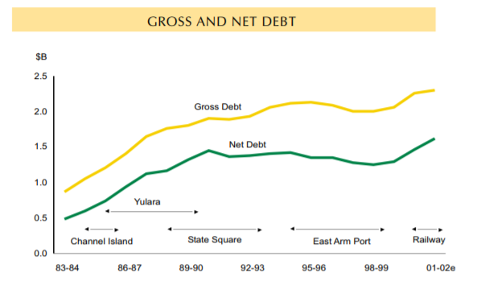
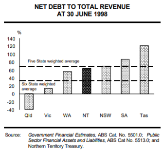
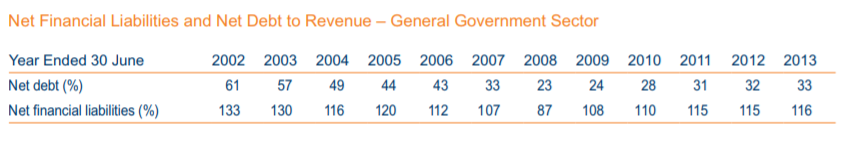

The media debate about last Monday’s NT Budget sure could do with some context and perspective. The Australian’s Amos Aikman was an honourable exception:
Everyone could see this mess coming. You can’t have a mining boom, two new gas plants, a whole lot of federal indigenous spending and a GST bonanza stacked back to back without experiencing a hangover.
But now Treasurer Nicole Manison wants you to believe it’s all Canberra’s fault for “cutting” transfer payments (read money from the hip pockets and kitchen tables of non-Territorian taxpayers) under a GST redistribution formula her government actively supports.
That’s a useful start to understanding the NT Budget, and also helps to generate sensible views about where we should go from here. But let’s give our story some wider context. The general but not universal economists’ view about how best to manage the boom-bust cycle of capitalist economies involves governments injecting significant fiscal stimulus at times of economic downturn, in order to prevent or minimise the length and depth of the recession that can otherwise be expected to occur. Deficits and accumulated net debt are then supposed to be progressively reversed during the boom part of the cycle. Federally the Rudd/Gillard government did an excellent job with the first part of that recipe at the onset of the 2008 Global Financial Crisis. However it completely failed with the second part, as has its successor the Abbott/Turnbull LNP regime. The NT was in almost the opposite position from 2008 through until around 2014. Our economy experienced almost unparalleled boom times for the 6 year period from 2009 to 2014, for all the reasons Amos Aikman highlights. But there are crucial points we need to understand, and that the politicians of the time should have understood:
- broad-based China-propelled mining boom predictably wasn’t going to last (China had artificially inflated its own economy to see it through the GFC);
- the Inpex gas project was due to progressively wind down towards expected 2018 completion;
- the large injection of federal indigenous spending was linked to the 2007 Howard Intervention aka Closing the Gap and was always due to wind down by 2012; and
- the GST bonanza was itself generated by the inflow of Inpex workers and the peculiarities of the GST formula. As the Inpex workers moved out and went home the operation of the Commonwealth Grants Commission’s GST-sharing formula ensured that the NT’s GST share fell from 5.7 times per head of population back to the more usual but still very generous 4.5 times per capita share.
All these things were entirely predictable. NT Treasurer Nicole Manison has referred to them as a “perfect storm” for the Territory and in one sense that’s true, but it’s a storm that should have been foreseen back in 2009-10 and governments should have begun planning for it from then. After all, we had only recently experienced the turbo-charged boom-bust cycle engendered by large gas projects with the Conoco-Phillips gas plant between 2001 and 2005. Those booms are short-lived, with almost as many locals losing out as those who make a killing during the boom. You would have expected that the Northern Territory Government would have implemented plans to iron out the bumps, maximise the benefits and minimise the losses. But they did almost nothing, just talked big about what a bonanza Inpex was going to be for Territorians. The problem was that the Henderson ALP government had survived the 2008 NT election by the skin of its teeth and was thereafter intent on hanging onto government at almost any cost. Consequently it didn’t make any meaningful attempt to reduce debt and deficit during the boom years, or to harness the benefits of the boom. Presumably Hendo imagined that the “Invisible Hand” of the market would ensure that everyone would be a winner. The record of the Mills/Giles CLP government that took over in 2012 is hardly any better, although the reasons for that are a bit more complicated. But first some even wider context.
Debt, deficit and development in the first 30 years of self-government – 1978-2008
At self-government in 1978 the NT was underdeveloped after just over a century of neglect by its successive colonial overlords South Australia and then the Commonwealth. It had a tiny population within a huge land mass (almost 20% of the Australian continent), a drastic lack of public infrastructure, a very narrowly-based economy and a large (1/3 of the total population) severely disadvantaged Indigenous population. Little attempt was made by the Commonwealth to create processes that could help to build bridges of communication or understanding between Aboriginal and white Territorians, or between the Aboriginal governance structure established by the Commonwealth only a couple of years before (the Aboriginal Land Rights (NT) Act 1976 (Cth)) and the “cookie cutter” Westminster system that the Fraser government foisted on the Territory in 1978 with little local consultation. The result was 40 years of conflict or at best uneasy co-existence between the two predominant races. Successive CLP Territory Governments saw Aboriginal Territorians as the enemies of the development they saw as essential to the NT’s future and so opposed every single Aboriginal land claim. On the other hand Aboriginal Territorians, who certainly didn’t oppose growth or development as long as they were consistent with fundamental “caring for country” obligations, saw the Government as disrespecting their law, culture and traditions. The shadows of that history of mutual misunderstanding and hostility continue to blight the Territory. It is beyond the scope of an article like this to explore those issues any further, but they are vital to any real understanding of Territory development, debt and deficit. The new Territory government didn’t accumulate very much debt in its first 5 years or so of existence. The Commonwealth funded the Territory extremely generously to help it get established and begin to overcome the legacy of many years of neglect. Nevertheless, from about 1983 onwards the Government began borrowing heavily to finance construction of a series of grand infrastructure and other projects which it argued (often correctly) were essential to future growth and development towards a broader-based, sustainable economy. However, in addition to the projects depicted on the graph below, it also funded the East Arm Trade Development Zone and Douglas-Daly Farms project, and underwrote the Darwin and Alice Springs Sheraton Hotels (see p 112 and following). None of those initiatives were successful at least in the short term and all contributed to burgeoning Territory debt. The Sheraton deals were especially problematic, because the NTG effectively guaranteed the operators’ profits. Although full terms still haven’t been disclosed on spurious “commercial-in-confidence” grounds, it seems that the Government guaranteed the Sheratons a 15% annual profit and paid the hotels’ operators to the extent they failed to achieve it. The arrangements not only allowed the Sheratons to compete unfairly with other hotels but also gave Sheraton no real incentive to grow the tourism market or operate efficiently. The deals were eventually unwound in the 1990s:
Northern Territory tax payers funded the Sheraton Hotels deal, which by 1991 had cost $454 million. When the Sheratons were eventually sold and the NT Government could divest itself of underwriting commitments, the Territory’s accumulated debt for these hotels alone was in the order of $235 million.
In fairness, the NT government also had to cope with somewhat reduced although still very generous federal funding from 1985 onwards, and from 1988 onwards was funded under the same Commonwealth Grants Commission formula as the states. That required a level of fiscal discipline that it took CLP Ministers some considerable time to develop. They could no longer spend money freely without adverse consequences on developing the Territory at all costs and often in very unusual ways, but they kept doing so anyway. In 1991 ABC TV’s Four Corners show screened an appropriately title episode on CLP government spending antics and associated cronyism titled Big Bucks Territory .

Nevertheless net debt was controlled and reduced through the 1990s, partly due to more prudent budget management under Chief Minister Marshall Perron (and later Shane Stone), partly due to asset sales (e.g. the Yulara/Ayers Rock resort was sold in two tranches in 1993 and 1997), and partly due to economic good fortune with the arrival of large-scale federal defence spending and the early stages of the China-fuelled mining boom. Debt reduction occurred despite the dead weight of the Sheraton deals, TDZ and other failed projects, not to mention funding of the huge State Square project (new Supreme Court and Parliament House buildings). State Square was certainly a desirable concept, explicitly intended to retain the NT’s construction capability and keep the economy turning over until anticipated major defence spending began. By 1998 net debt had been reduced to 65% of the Territory’s total revenue, putting us in the middle of the pack of Australian states and territories on this important measure of fiscal health.
However, fiscal prudence can have political costs in a territory whose urban white residents (if not its Indigenous ones) had become accustomed to big spending and seemingly never-ending good times. Political management is further complicated by the very high proportion of public servants and teachers in the Territory urban community. We have a full suite of well-staffed “state” government departments as well as multiple local government bureaucracies, all to service a total population of about 250,000. Fiscal discipline risks enraging the public servants and Denis Burke, who succeeded Shane Stone as Chief Minister in 1999, was much less skilful at managing public servants’ wishes and expectations than his predecessors Perron and Stone. For that and other reasons the CLP unexpectedly lost government in 2001 after 23 years of uninterrupted rule since self-government, and was replaced by a Labor government under Chief Minister Clare Martin. In fairness to Denis Burke, the “sunset” clause on new Aboriginal land claims which the Howard government legislated in 1998 together with Howard’s Native Title Act 1998 greatly restricted Burke’s capacity to rely on the traditional CLP standby of a “black-bashing” election campaign strategy. Neither statutory land rights nor common law native title could plausibly be used any longer to inflame groundless urban Territorians’ fears of their backyards being taken by the Aborigines. The Territory economy remained strong and prosperous, and not even the most gullible voter could be convinced that the sky was about to fall and that the CLP was their only hope of salvation.
As shown in the above table, net debt to revenue still stood at 61% in 2002, because the new Labor government (necessarily) continued the CLP’s drawdown of existing reserves to fund the NT’s share of construction costs of the new Darwin-Alice Springs Railway. Total construction cost was $1.2 billion of which the Northern Territory Government share was $190 million. Whether that expenditure pays off in the long run for any of the government participants (federal, SA and NT governments) is yet to be proven. It is certainly a necessary “building block” if the NT economy is ever to reach its potential. The Martin government succeeded in reducing the Territory’s net debt to revenue ratio to just 23% by 2008. Although helped by the ongoing mining boom and the large Conoco-Philips gas project, not to mention big federal spending in Darwin to accommodate and educate the flood of asylum seekers who had arrived in Australia from around 2000 onwards, this was nevertheless an impressive achievement in fiscal management. The Martin government also enjoyed a major success in having the Darwin Waterfront project (including a major convention centre) completed. It was effectively a Public-Private Partnership (PPP) development with the Toga Group. Eventually Toga ended up handing back its rights to the NTG three or four years ago after sales results failed to live up to expectations. Nevertheless, in the wider sense Darwin Waterfront has greatly enhanced Darwin’s amenity and attractiveness for both residents and tourists. It will be further improved if and when the long-awaited Landbridge hotel (brokered by the Giles CLP government before it lost office in 2016) is completed. However, like CLP governments before it, the Martin government was accused of failing to deliver for Aboriginal Territorians. Those perceptions caused considerable disquiet among the Party’s Aboriginal MLAs, both during Clare Martin’s period in office and that of Paul Henderson, who opportunistically deposed her from office following the Howard Government’s NT Intervention in 2007. Aboriginal community disquiet soon put the Henderson government into a minority position in the Legislative Assembly and finally led to its losing office in 2012. More recently, research undertaken by Darwin accountant Barry Hansen under the auspices of the Yothu Yindi Foundation found that hundreds of millions of dollars each year in federal GST funding had been effectively diverted from remote Aboriginal communities to the benefit of NT towns and cities by successive NT governments both CLP and ALP.Debt, deficit and development in the last 10 years of self-government – 2008-2018
According to contemporary best practice macro-economics, The Henderson government should have been progressively reducing net debt starting from about 2010. The Territory economy remained healthy despite the 2008-9 GFC, for the sorts of reasons spelled out by Amos Aikman in the quote extracted earlier in this article. Instead Labor allowed net debt to creep back up from 23% to 32% of revenue by the time it lost government to the CLP in August 2012. Henderson and his advisers were acutely aware of the danger of losing government, having ruled in minority since 2009 with the support of Independent MLA Gerry Wood. They decided that they needed to “sandbag” seats in Darwin’s northern suburbs with carefully targeted additional spending. They also concluded that they couldn’t afford politically to increase taxes and charges significantly, especially power and water charges notwithstanding that all other states and territories had been forced to do so. The sandbagging strategy worked brilliantly with Labor holding all its urban seats. Unfortunately it appears that they had forgotten about remote bush (Indigenous) seats. Aboriginal Territorians voted against Territory Labor en masse for the first time, largely on the back of resentment engendered by the Howard Intervention/Closing the Gap (which Labor had unwisely adopted and made its own) and its 2007-8 local council amalgamation scheme which effectively removed local Aboriginal community control of their own local councils. The new CLP government that ousted Labor in August 2012 under Chief Minister Terry Mills at first embarked on a prudent program of conservative fiscal management and budget repair, including increases in power and water charges which were significant, though less than the ones that other states and territories had recently also been forced to impose. Unfortunately, Mills’ CLP colleagues Adam Giles and Dave Tollner took advantage of the short-term unpopularity of Mills’ prudent and much-needed fiscal management and deposed him as Chief Minister while he was overseas in Japan in March 2013. The Giles/Tollner regime proceeded largely to abandon conservative fiscal management, slashed Mills’ increases in taxes and charges and left their business cronies to cash in on the Inpex development boom more or less without restriction. As a result the net debt to revenue ratio blew out from 32% when Labor lost office in 2012 right up to 67% in the 2014-15 Budget, almost as high as at the end of the CLP’s earlier “Big Bucks Territory” spending spree in 1990. Again in fairness, the debt blowout was partly caused by delays and cost increases flowing from the new Darwin prison project which had been commissioned under Labor. Nevertheless the Giles regime, like the Henderson government before it, had become increasingly aware that it was facing electoral oblivion, and after only a single term. Giles knew that debt levels were getting dangerously high; much higher than under Henderson. He also knew that the Inpex windfall would soon start to run out. Like Henderson he also concluded (no doubt correctly) that he couldn’t afford politically either to cut services, sack public servants or increase taxes. Accordingly he decided to sell government assets, something that is much easier for a CLP government than an ALP one. The Territory Insurance Office was sold to the Allianz group for just over $400 million and the Darwin Port infrastructure and business to the Chinese-owned Landbridge Group for just over $500 million. The resulting sale proceeds allowed Giles to reduce the Territory’s net debt back down to a respectable 41% of revenue by the time he lost office (and his own seat) in August 2016. Unlike many local political, media and economic commentators, I think both the Port and TIO sale were good decisions in themselves, and the prices they realised were also good. However, while public sector debt reduction in contemporary circumstances is clearly a good thing, it did little in itself to solve the Territory’s long-term problem: that after 40 years of self-government it still has a narrowly-based and dubiously sustainable economy propped up by federal funding to meet 75% of its spending needs. That is especially so given that both the Port and TIO were profitable assets. Once sold future governments no longer have those ongoing revenue streams. The Port and TIO sales only really made sense if a substantial part of the sale proceeds could be used to generate new productive public assets. Consequently Giles set aside $200 million from the TIO sale in the Northern Territory Infrastructure Development Fund. It was intended to be used as seed capital for new and productive PPP developments. However neither the Giles government nor the current Gunner ALP government has succeeded (to date) in clinching any such projects. That is extremely disappointing. In my view it IS possible to achieve such projects. That and other issues around further developing the NT’s economy to a stable, prosperous and sustainable stage will be the subject of another article I am aiming to publish in the near future.
The Gunner government’s current fiscal position
Despite claims by some people in the media, and predictable hyperbole by Opposition Leader Gary Higgins in today’s Sunday Territorian, the Gunner government didn't have any real political choice in last Monday's budget but to run up the deficit in the short term to keep the Territory's economy going. The only logically available survival options were borrowing more, taxing more or major cuts to government staff and services. For obvious reasons options two and three would have been both political and economic suicide. Mr Higgins says:
To hear that the Northern Territory will be saddled with a $4.5 billion net debt (in 2018-19) is unprecedented. That is not a budget, it’s a complete and utter blowout.
To be blunt, this assertion is completely wrong and misleading. The Budget’s $4.5 billion net debt figure represents a net debt to revenue ratio of 51%. As this article has shown at length, the Territory’s net debt ratio was substantially higher than that throughout the period 1990-2002 and again in 2014-15, when Mr Higgins himself was a member of the Cabinet that presided over it. The projected net debt to revenue ratio of 119% for 2021-22 is rather more worrying, but not “frightening” as Gary Higgins would have us believe. Nor is it unprecedented at least by national standards. As a recent article (23 February 2018) in The Australian newspaper explained:
S&P expects WA’s debt load supported by the state’s tax receipts to mushroom from $45.8bn to $56bn next year — equal to a debt-to-revenue ratio of 114 per cent and up from its current level of 102 per cent. …
NSW is forecast to spend about $22bn in each of the next two years to help address infrastructure shortages. New schools and hospitals will be built, and more funding directed to transport projects.
The state’s debt-to-revenue ratio will climb to 81 per cent next year, ahead of Victoria’s on 71 per cent, while Queensland’s ratio would remain steady at 113 per cent. South Australia’s debt will fall $1bn this year before climbing $800m to $15.3bn next year. The debt-to-revenue ratio will fall from 84 per cent to 79 per cent.
However, while not unprecedented, the Gunner government is certainly gambling that its recent decision to end the fracking moratorium and implement all recommendations of the Pepper Inquiry will result in very substantial gas exploration and new development. Under either the “Gale” or “Breeze” scenarios outlined by Pepper, additional revenue to the NT government will be enough to service the additional debt the Territory is expected to accumulate between now and 2021. No other development prospects on the horizon offer that possibility. However even the most positive Gale scenario, while it offers thousands of additional jobs in the exploration and construction phase and hundreds during production, does not generate enough additional economic activity to enable net debt to be reduced over time or even for the annual budget deficit to be converted to a surplus. Onshore gas will not be the Territory’s economic salvation of itself just as neither Conoco-Philips nor Inpex projects were, despite the claims of the politicians who touted them. The trick for Territory politicians and businesses will be to use the breathing space that onshore gas hopefully offers to work on new ideas that will really give the Territory a strong, prosperous and self-sustaining economy into the future. That will be the subject of my next (and equally long) article. Don’t say you weren’t warned. In the meantime, we badly need government fiscal stimulus to retain the NT’s construction capability and keep the economy turning over until onshore gas development begins and anticipated major defence spending kicks in (assuming Territory businesses can capture enough of the work - which is itself a big question mark that needs to be addressed). It’s essentially exactly the same strategy as Marshall Perron implemented successfully through the early 1990s. However, an optimal fiscal stimulus strategy needs both short-term and longer term elements. The short-term element was provided by a number of policies implemented by the Gunner government early in its term together with the “tradies’ bonus” scheme that they belatedly adopted from the previous Giles CLP regime. However the longer-term element has mostly gone missing in action. The Landbridge Hotel project failed to get going for reasons that still haven’t been adequately explained. Hopefully it will start this year. Last year’s capital works budget simply wasn’t spent and the unspent parts have been re-announced in last Monday’s Budget as if it was all new spending. There really isn’t an acceptable excuse for that given current economic circumstances. Similarly, it seems that the Government may have simply forgotten about the $200 million Northern Territory Infrastructure Development Fund, as former Top Gun NT News politics reporter Chris Walsh revealed last week. Again that is almost unforgiveable. The longer term fiscal stimulus measures should have begun kicking in a year or so ago, not at the current leisurely pace so that by the time works actually commence lots of businesses will have gone broke or left town. It is these sorts of issues that the NT Opposition should be pursuing if it wants to be taken seriously, not the simplistic economic nonsense Gary Higgins published in today’s Sunday Territorian.
The NT has essentially been populated artificially as a matter of Commonwealth policy (fear of invasion from the north, and of aboriginal Australia). People of what is now Indonesia knew it was there for many centuries, but decided it wasn't worth the effort to settle there. It's tragic that we are still unreconciled with the original inhabitants, the people whose culture has adapted to that environment. That is a sign that we don't understand how rigid, intolerant, and authoritarian our own bourgeois culture is. No wonder the whole exercise still needs to be subsidised.